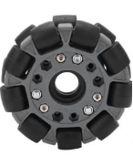
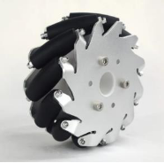
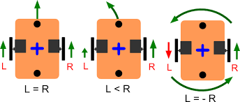
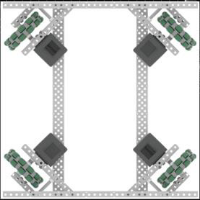
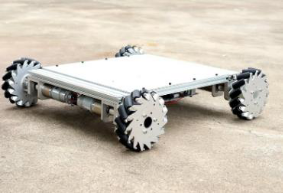

Understanding Wheels and Drives in Robotics and Vehicles
Wheels and drive mechanisms are fundamental components of robotic and vehicular systems. The choice of wheel type and drive system greatly influences a machine’s mobility, agility, and efficiency. This document explores the types of wheels and drives, emphasizing their unique features and applications.
Types of Wheels
1. Traction Wheels
Traction wheels are designed to maximize grip and stability. Their tread patterns are optimized for specific terrains such as off-road, wet, or icy conditions. These wheels ensure stability by distributing weight evenly and reducing slippage, making them ideal for scenarios requiring high levels of traction. Key design considerations include:
- Contact Patch Size: Determines the area of the wheel in contact with the surface.
- Tire Pressure: Affects grip and durability.
- Dynamic Load Distribution: Maintains balance and enhances performance under varying loads.
2. Omni Wheels
Omni wheels are advanced wheels that allow multidirectional movement. Their unique design includes rollers along the circumference, enabling:
- Forward and Backward Movement: While providing lateral slide capabilities.
- Multidirectional Control: Achieved by coordinating the rotation of multiple wheels. Omni wheels are widely used in robotics for precise movement and are particularly suited for environments requiring high maneuverability.

3. Mecanum Wheels
Mecanum wheels, a type of omnidirectional wheel, feature rollers positioned at a 45-degree angle to the wheel’s axis. These rollers allow:
- Diagonal and Lateral Movement: Without changing the orientation of the vehicle.
- Exceptional Flexibility: Ideal for precise robotic applications. The angled rollers generate forces that combine to enable smooth motion in any direction, making mecanum wheels a preferred choice in industrial robotics and competition scenarios.

Types of Drives
Drive mechanisms power and control the movement of wheels, enabling motion in robotic and vehicular systems. The drive system determines how a robot moves and interacts with its environment.
1. Differential Drive
A differential drive system uses two independently powered wheels, typically mounted on either side of the robot. By adjusting the speed and direction of each wheel, this system enables:
- Forward and Backward Motion
- Sharp Turns
- In-Place Pivoting Differential drives are simple and efficient, making them suitable for various robotic applications.

2. Holonomic Drive
Holonomic drive systems, such as those using omni or mecanum wheels, offer unmatched freedom of movement. Key capabilities include:
- Simultaneous Translation and Rotation: Independent control of movement along X, Y, and Z axes.
- Enhanced Agility: Perfect for tight spaces and applications requiring precise motion. Holonomic drives are ideal for robots that need to navigate complex environments.

3. Mecanum Drive
A specialized form of holonomic drive, the mecanum drive uses four wheels with angled rollers. This design allows:
- Omnidirectional Movement: Forward, backward, sideways, diagonally, and in-place rotation.
- Exceptional Maneuverability: Ideal for industrial tasks and robotics competitions. The mecanum drive’s versatility makes it a go-to choice for environments demanding precision and adaptability.

References
By understanding the various wheel types and drive systems, designers and engineers can choose the best configurations to meet specific performance and application requirements.